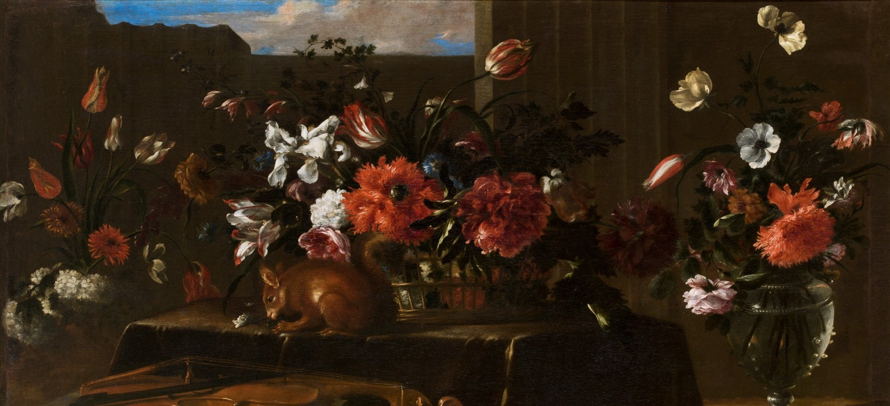
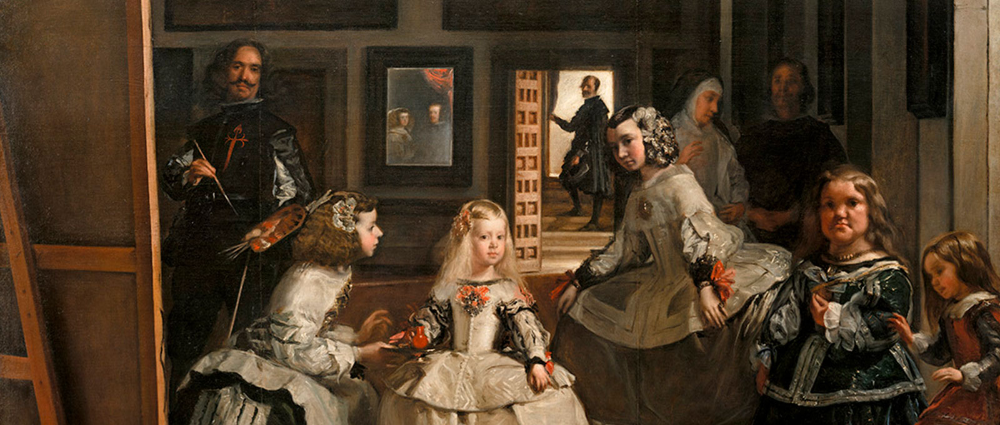

Το Μουσείο του Πράδο, στην καρδιά της Μαδρίτης, αποτελεί έναν από τους σημαντικότερους πολιτιστικούς θησαυρούς του κόσμου. Με μια συλλογή αριστουργημάτων που εκτείνεται από τον 12ο έως τον 19ο αιώνα, το μουσείο προσφέρει μια καθηλωτική εμπειρία μέσα από τα έργα των κορυφαίων Ισπανών, Ιταλών και Φλαμανδών καλλιτεχνών.
Ανακαλύψτε τη μαγεία των πινάκων του Βελάσκεθ, του Γκόγια, του Ελ Γκρέκο και του Ρούμπενς, και περιηγηθείτε σε μια συλλογή που αριθμεί πάνω από 8.000 πίνακες, 700 γλυπτά και χιλιάδες χαρακτικά και σχέδια. Κάθε έργο είναι ένα παράθυρο σε μια άλλη εποχή, ένα κομμάτι της ιστορίας που ζωντανεύει μπροστά στα μάτια σας.
Η επίσκεψη στο Πράδο δεν είναι απλώς μια βόλτα στο παρελθόν — είναι μια εμπειρία αισθήσεων, έμπνευσης και βαθιάς καλλιτεχνικής συγκίνησης.